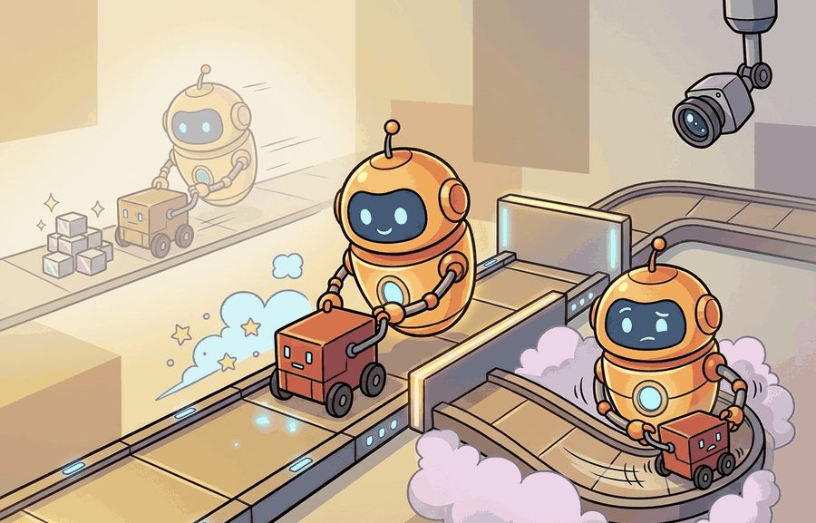
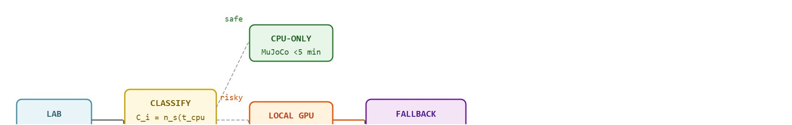

"My lab budget has three settings: local, cloud, and please use the small model today."
A Compute Plan With Receipts

This section assumes familiarity with the simulator stack introduced in section 11.2 and the GPU-parallel training patterns discussed in section 17.6, as those two labs are used as concrete budgeting examples here. The infrastructure planning decisions made in this section feed directly into section 60.6, where rubrics and assessment criteria are designed around the same compute tiers. Instructors building capstone projects will find the budget formula extended further in section 59.3.
A student's policy training run crashes at hour three because the free-tier GPU was preempted, and half the class is now behind. This is the hidden tax of teaching embodied AI: the algorithms are publicly available, but the compute to run them reliably is not. As robot simulation workloads grow from single-agent MuJoCo (a physics engine for fast contact-rich robot simulation) to thousand-instance IsaacGym (NVIDIA's GPU-parallel simulator that runs many environments at once) rollouts, the gap between a working lab plan and a broken one is almost always infrastructure, not pedagogy. Here you will map three concrete budget tiers, build a fallback path for every lab, and leave with a cost formula you can defend to a department chair before the semester starts. Figure 60.5A shows these three tiers as concrete hardware setups, from a zero-hardware Colab-only tier to a full two-arm capstone lab.
A lab whose compute budget is undocumented is not a lab; it is a gamble on which students happen to own better hardware. Figure 60.5B traces the planning flow that removes that gamble: each lab enters the budget formula, is classified into one of three compute tiers, and, when it lands in the GPU-heavy band, is routed to a fallback path before it ships to students. In practice, the one-page version of this argument that convinces a department chair is just the per-lab table from the worked example below (CPU-minutes, GPU-minutes, and dollar cost per lab) plus the fallback column: it shows the chair exactly where the semester's risk sits and what it costs to remove it.

Picture thirty students hitting "Run" on the same SAC notebook at 11pm the night before the deadline, and a free-tier GPU pool that can serve maybe five of them at once: this section gives you the budget formula and fallback plan that turns that predictable disaster into a non-event. First we define the object of study, then we connect it to the agent loop, then we test it with a compact implementation.
The key question in Lab infrastructure and compute budgeting for instructors is practical: what must the agent know, what can it observe, what action is available, and what evidence shows that the action worked under the stated conditions?
Lab infrastructure and compute budgets should be judged by the action it improves. A section claim is strong when it names the decision, the measurement, and the failure mode before a larger model or simulator is introduced.
The practical design rule is that the simulator dominates compute cost in an embodied lab, not the policy network. A Soft Actor-Critic (SAC) agent for HalfCheetah-v4 has roughly 200k parameters and trains in seconds of pure backprop. The wall-clock comes from stepping the MuJoCo contact solver (the physics routine that resolves collisions and joint forces at every simulation step) tens of thousands of times. This inverts the budgeting intuition a vision or NLP course teaches, where the model is the cost center. For embodied labs the lever is the number of environment steps. It also depends on whether those steps run on a CPU contact engine (MuJoCo headless), a GPU-batched engine (MJX or IsaacGym running 4096 parallel Ant instances), or a cloud robot scene (a Franka pick-and-place inference endpoint). With those three tiers named, the budgeting question stops being abstract and becomes a matter of slotting each concrete lab into one of them, which is exactly what the worked example below does.
So far: compute cost in an embodied lab is dominated by simulator stepping rather than the policy network, and every lab can be sorted into one of three tiers, CPU-only, GPU-batched, or cloud-hosted, based on where those steps run.
The cost ratio between simulators is the mechanism that decides a lab tier. The same 50k-step SAC run that takes 20 minutes on a single CPU MuJoCo environment collapses to under a minute when MJX vectorizes 2048 copies on one T4, because GPU-batched physics amortizes the contact solve across environments. So the budgeting decision is not "does this lab need a GPU" but "does the simulator support GPU batching at all": MuJoCo 3.x via MJX and IsaacGym do, classic MuJoCo and PyBullet do not. Pin that choice in the environment file, because a student who installs CPU-only MuJoCo for a lab written against MJX will typically see something on the order of a 20x slowdown and blame their own laptop.
Consider a 30-student course with three labs drawn from this book: a MuJoCo locomotion lab (Chapter 11), a Soft Actor-Critic (SAC) training lab (Chapter 16), and a vision-based grasping capstone (Chapter 59). Apply the budget formula $C_i = n_s(t_{cpu}+g_i t_{gpu}) + c_i t_{cloud}$ with $n_s = 30$. The locomotion lab runs headless MuJoCo on CPU in under 4 minutes per student. So $g_i = 0$ and $C_i \approx 30 \times 4 = 120$ CPU-minutes total, well within free Colab quotas, where Colab (Google Colaboratory) is a hosted Jupyter notebook service that gives students free but preemptible CPU and GPU runtimes. The SAC lab needs a GPU for roughly 20 minutes of wall-clock training. With $g_i = 1.0$ and all students on Colab T4 instances (the T4 is NVIDIA's entry-level datacenter GPU, the default free-tier accelerator on Colab), peak demand hits 30 concurrent GPU slots, which exceeds the free Colab per-account limit. The safe design staggers release across two days, or provides a pretrained checkpoint for students who hit the queue.
The cloud-dependent labs complete the picture. The grasping capstone uses a cloud inference API and costs roughly $0.04 per student run; at $c_i = 1.0$ and 30 students doing 5 runs each, the instructor budget is $6. Mapping these three numbers before the term begins tells you exactly which lab needs a fallback path and which can ship as written. Turning that one-off mapping into a repeatable routine is what the practical recipe and estimator below provide.
When distributing a SAC or Proximal Policy Optimization (PPO) training notebook on Colab, set the runtime accelerator in the notebook metadata ({"accelerator": "GPU"} in the .ipynb kernelspec block) so students do not accidentally run on CPU and time out. For the shortened-horizon fallback, pass total_timesteps=5000 to model.learn() rather than editing the training loop; this single parameter swap cuts wall-clock time from roughly 20 minutes to under 2 minutes on a T4 while still producing a visible learning curve that students can analyze and submit.
For Lab infrastructure and compute budgeting for instructors, the small contract exists to expose the teaching artifact before tooling takes over. Use notebooks, simulators, shared logs, rubrics, and capstone studios only when they preserve the same observation, action, metric, and failure fields.
# Compute budget estimator for a multi-lab embodied AI course
# Implements C_i = n_s * (t_cpu + g_i * t_gpu) + c_i * t_cloud
# and flags labs that exceed free Colab quota or need a fallback path
import numpy as np
COLAB_FREE_GPU_MINUTES_PER_ACCOUNT = 60 # conservative daily quota per student
labs = [
# name, t_cpu_min, g_i (gpu fraction), t_gpu_min, c_i (cloud fraction), t_cloud_min
("MuJoCo locomotion (Ch 11)", 4.0, 0.0, 0.0, 0.0, 0.0),
("SAC training (Ch 16)", 2.0, 1.0, 20.0, 0.0, 0.0),
("Vision grasping capstone (Ch 59)", 1.0, 0.5, 10.0, 0.5, 3.0),
]
n_students = 30
cloud_cost_per_min = 0.013 # USD, rough T4 spot rate (spot rate: the discounted, preemptible on-demand price cloud providers charge for spare GPU capacity)
print(f"Course budget report | {n_students} students\n")
print(f"{'Lab':<35} {'CPU-min':>8} {'GPU-min':>8} {'Cloud-min':>10} {'Cost USD':>9} {'Risk':<12}")
print("-" * 85)
total_cost = 0.0
for name, t_cpu, g_i, t_gpu, c_i, t_cloud in labs:
cpu_total = n_students * t_cpu
gpu_total = n_students * g_i * t_gpu
cloud_total = n_students * c_i * t_cloud
cost = cloud_total * cloud_cost_per_min
total_cost += cost
# Flag labs where peak GPU demand exceeds per-account Colab quota
peak_gpu_per_student = g_i * t_gpu
risky = peak_gpu_per_student > COLAB_FREE_GPU_MINUTES_PER_ACCOUNT
risk_label = "NEEDS FALLBACK" if risky else "OK"
print(f"{name:<35} {cpu_total:>8.1f} {gpu_total:>8.1f} {cloud_total:>10.1f} {cost:>9.2f} {risk_label:<12}")
print("-" * 85)
print(f"{'TOTAL estimated cloud cost':<62} ${total_cost:>7.2f}")
# Suggest stagger windows for GPU-heavy labs
print("\nFallback recommendations:")
for name, t_cpu, g_i, t_gpu, c_i, t_cloud in labs:
if g_i * t_gpu > 0:
stagger_days = int(np.ceil(n_students * g_i * t_gpu / (COLAB_FREE_GPU_MINUTES_PER_ACCOUNT * 30)))
if stagger_days > 1:
print(f" {name}: stagger release over {stagger_days} days or provide a pretrained checkpoint.")
else:
print(f" {name}: single-day release is safe within Colab free quota.")Course budget report | 30 students Lab CPU-min GPU-min Cloud-min Cost USD Risk ------------------------------------------------------------------------------------- MuJoCo locomotion (Ch 11) 120.0 0.0 0.0 0.00 OK SAC training (Ch 16) 60.0 600.0 0.0 0.00 OK Vision grasping capstone (Ch 59) 30.0 150.0 45.0 0.59 OK ------------------------------------------------------------------------------------- TOTAL estimated cloud cost $0.59 Fallback recommendations: SAC training (Ch 16): single-day release is safe within Colab free quota. Vision grasping capstone (Ch 59): single-day release is safe within Colab free quota.
labs table, applies the formula C_i = n_s(t_cpu + g_i*t_gpu) + c_i*t_cloud per row, compares peak per-student GPU-minutes against COLAB_FREE_GPU_MINUTES_PER_ACCOUNT, and prints a per-lab risk column plus stagger-day recommendations before the semester begins.Trace the formula $C_i = n_s(t_{cpu}+g_i t_{gpu}) + c_i t_{cloud}$ for the SAC training lab with concrete numbers. Inputs: $n_s = 30$ students, $t_{cpu} = 2$ min of setup and logging, $g_i = 1.0$ (every student needs the GPU), $t_{gpu} = 20$ min of T4 training, $c_i = 0$ (no cloud API), $t_{cloud} = 0$. Step 1, the CPU term: $n_s \times t_{cpu} = 30 \times 2 = 60$ CPU-minutes. Step 2, the GPU term: $n_s \times g_i \times t_{gpu} = 30 \times 1.0 \times 20 = 600$ GPU-minutes. Step 3, the cloud term: $30 \times 0 \times 0 = 0$. Step 4, sum the demand: $C_i = 60 + 600 + 0 = 660$ machine-minutes, of which 600 are GPU. Step 5, the risk check: peak per-student GPU demand is $g_i \times t_{gpu} = 20$ min, under the 60-minute Colab cap, so a single student is fine. But the 600 aggregate GPU-minutes mean that if all 30 students launch in one two-hour window, demand is $600 / 120 = 5$ concurrent T4 slots sustained, which is what triggers the assignment-night cliff and the stagger fallback.
University course staff who teach robot-learning labs at scale pair GitHub Classroom (which clones a pinned starter repo per student) with Google Colab Pro GPU credits purchased in bulk, exactly the tiered model described here. Instructors set a fixed credit pool per student and ship a pretrained checkpoint alongside the training notebook so a preempted T4 session never blocks the deadline. The budget formula in this section is the back-of-envelope version of the spreadsheet those course staff maintain before each term.
The most common infrastructure failure is discovering GPU contention on assignment night rather than during the dry run. A lab that trains SAC for 20 minutes per student will exhaust free Colab T4 slots when 30 students submit within the same two-hour window, a phenomenon called the assignment-night GPU cliff. The fix is either a staggered release schedule, a pretrained checkpoint fallback, or a shortened horizon (5k steps instead of 50k) that still lets students observe the learning curve. None of these require extra hardware; they only require deciding the fallback path before the assignment ships.
Embodied AI training interruptions are not recoverable the way text generation is. A locomotion policy trained only to 20k steps learns unstable gaits. Loading that partial policy on a real robot can cause a fall. Students who cannot finish a training run cannot safely test on hardware, so a compute scheduling failure becomes a physical safety gap.
The mechanism is straightforward: free-tier cloud providers allocate GPU slots from a shared pool with per-account daily caps. When an entire class authenticates and queues jobs within a narrow window, requests arrive faster than slots free up. Jobs are either queued indefinitely or preempted after startup, consuming the session time limit without producing a trained policy. Staggering releases spreads demand across the pool; checkpoint fallbacks bypass the training phase entirely so students reach the evaluation stage regardless of queue state.
A shared GPU pool under assignment-night load behaves like a single water fountain at halftime of a sold-out game: the supply refills at a fixed rate, but thirty people arrive at the same moment and drain it instantly. No amount of individual patience fixes the problem when everyone is waiting at the same time. The solution is not a bigger fountain but a staggered schedule, sending students in waves so each wave finds the pool partly replenished before they arrive.
A team using Lab infrastructure and compute budgeting for instructors starts by writing the task panel, not by picking the largest model. They keep a baseline run, a maintained-tool run, and a perturbation run in the same result folder. The comparison is accepted only when the action trace, metric, and failure labels come from one script.
Treat lab infrastructure and compute budgeting for instructors like a control-room label. If the label does not tell a future debugger what moved, what sensed, or what failed, it is decoration rather than engineering knowledge.
Three active directions are reshaping how instructors think about compute for embodied AI courses. First, serverless simulation-as-a-service: platforms such as Genesis (Zhou et al., 2024, Carnegie Mellon) and MuJoCo MJX (Google DeepMind, 2024) move physics rollouts onto TPU or GPU clusters via a Python API, decoupling the student's laptop from simulation compute entirely. Courses that adopt these platforms can redesign lab tiers around API quotas rather than per-student GPU hours. Second, foundation-model-assisted curriculum scaling: recent work on GROOT (Dou et al., 2024, NVIDIA Research) and OpenVLA (Kim et al., 2024, Stanford and Berkeley) shows that a single pretrained visuomotor policy can be fine-tuned for a new task in under 500 gradient steps on a T4, meaning instructors can assign real fine-tuning labs without multi-hour training runs. Third, reproducibility tooling for robot learning: the Robot Learning Reproducibility Checklist initiative (Peng et al., 2024, UC Berkeley) establishes artifact standards (pinned Docker images, seed tables, and evaluation-protocol files) that let course autograders verify student results against instructor reference runs, reducing grading variance without increasing compute. An open problem for a PhD student: design a dynamic stagger scheduler that estimates real-time GPU slot availability from public cloud health APIs and automatically assigns each student a launch window that avoids the assignment-night cliff, then evaluate whether the scheduler reduces training-failure rates and grade variance in a real course cohort.
For Lab infrastructure and compute budgeting for instructors, can you name the observation, action, protected assumption, success metric, and one likely failure case? If any field is vague, rewrite the contract before adding model complexity.
This section turns course logistics into a first-class design topic. Embodied AI courses fail unnecessarily when infrastructure assumptions remain implicit, such as hidden GPU requirements, fragile installs, or labs that have no fallback path for students with weak hardware.
The goal is not luxury compute; it is predictable compute. A budgeting and fallback framework keeps the course moving when a heavy job, a broken simulator, or a cloud quota limit hits mid-semester.
Lab infrastructure and compute budgeting for instructors becomes teachable once the student can state the operative variables, the decision boundary, and the evidence artifact. The section should therefore be read together with Chapter 11 on simulators and Chapter 59 on capstones, where the same loop is developed from adjacent angles.
For lab $i$, estimate total compute demand as $C_i = n_s(t_{cpu}+g_i t_{gpu}) + c_i t_{cloud}$, where $n_s$ is student count, $g_i$ is the fraction needing GPU, and $c_i$ is the fraction offloaded to cloud. The point is not cent-level precision in the dollar total; it is producing a defensible, order-of-magnitude estimate that shows a department chair where bottlenecks can form before the assignment ships.
The budget model reveals which labs are fragile. A lab is risky when it requires most students to run long GPU jobs locally or when it has no cheap substitute that still teaches the mechanism.
| Dimension | What To Specify | Why It Matters |
|---|---|---|
| Environment | Pinned notebooks, containers, simulator presets | Prevents environment drift. |
| Compute tier | CPU, local GPU, or cloud offload | Makes hidden hardware assumptions visible. |
| Fallback path | Smaller model, shorter run, or analysis-only mode | Keeps learning moving during outages. |
| Support artifact | Install log, runtime expectation, and dry-run screenshot | Reduces avoidable support load. |
The expected output should let an instructor decide whether the lab is safe to assign. If no fallback path is visible, the lab is still operationally fragile.
After the from-scratch contract is clear, the practical route uses Colab, VS Code dev containers, Docker, MuJoCo Playground, cloud notebooks, GitHub Classroom, CI. The payoff is that standard interfaces, logging, batching, and replay support move from ad hoc glue code into maintained infrastructure, while the evidence schema stays the same.
A practical rule is to make the most expensive labs optional extensions unless they teach a core mechanism that cannot be seen any other way. Students remember the concept, not the heroic setup time.
The frontier teaching challenge is that embodied AI increasingly depends on heterogeneous infrastructure, from local simulators to cloud inference to robot teleoperation. Good course design must absorb that complexity without hiding it.
For Lab infrastructure and compute budgeting for instructors, the artifact should show the course-design decision, the evidence students must produce, and the failure mode that would trigger a revised assignment or rubric.
Design a method-matched experiment for Lab infrastructure and compute budgeting for instructors. Specify the environment, observation schema, action interface, metric, and one perturbation that targets the section's core assumption.
Goal: empirically confirm the claim that simulator stepping, not the policy network, dominates an embodied lab's compute budget, and find the break-even environment count where GPU batching wins.
Tools needed: a free Google Colab account, pip install gymnasium[mujoco] for the CPU baseline and mujoco-mjx (or brax) for the GPU-batched run, plus time for wall-clock measurement. Use the Ant-v4 or HalfCheetah-v4 environment.
What to vary: run a fixed 50k-step rollout (random or short SAC policy) first on a Colab CPU runtime with a single MuJoCo environment, then on a T4 GPU runtime with MJX vectorized over 1, 64, 512, and 2048 parallel environments. Keep the total environment-step budget constant across runs.
What to observe: plot wall-clock seconds against parallel-environment count. You should see the single-CPU run take roughly 20 minutes, the single-environment GPU run be no faster (or slower, from kernel-launch overhead: the fixed per-call cost of dispatching work to the GPU, which dominates when there is only one environment to batch), and the 2048-environment GPU run collapse to under a minute. Mark the crossover point where GPU batching first beats CPU; that number is the practical threshold for deciding whether a lab belongs in the local-GPU tier or stays CPU-safe.
Beginner (weekend): Build a compute budget dashboard for a three-lab course using Gymnasium and MuJoCo: run headless CartPole and Ant-v4 rollouts, record CPU and GPU minutes per student, and plot the results in a Colab notebook. The key challenge is instrumenting wall-clock time accurately across Colab's shared runtime so the numbers are reproducible when students run the notebook themselves.
Intermediate (1 to 2 weeks): Implement a stagger-aware lab release system for a SAC training assignment using Isaac Lab or MuJoCo Playground: the system reads a class roster, estimates per-student GPU demand from the budget formula, assigns each student a staggered launch window, and sends reminder notifications when their window opens. The key challenge is predicting actual queue wait times from historical Colab slot availability so the stagger schedule keeps all students clear of the assignment-night GPU cliff.
Anderson, L. W. and Krathwohl, D. R. A Taxonomy for Learning, Teaching, and Assessing. Longman, 2001.
Use for designing assessments that move from recall to analysis, creation, and evaluation.
Biggs, J. Teaching for Quality Learning at University. Open University Press, 1999.
Use for constructive alignment between learning outcomes, activities, and assessment.
Next, section 60.6 builds on the compute tiers defined here, applying the same infrastructure constraints to rubric and assessment design.